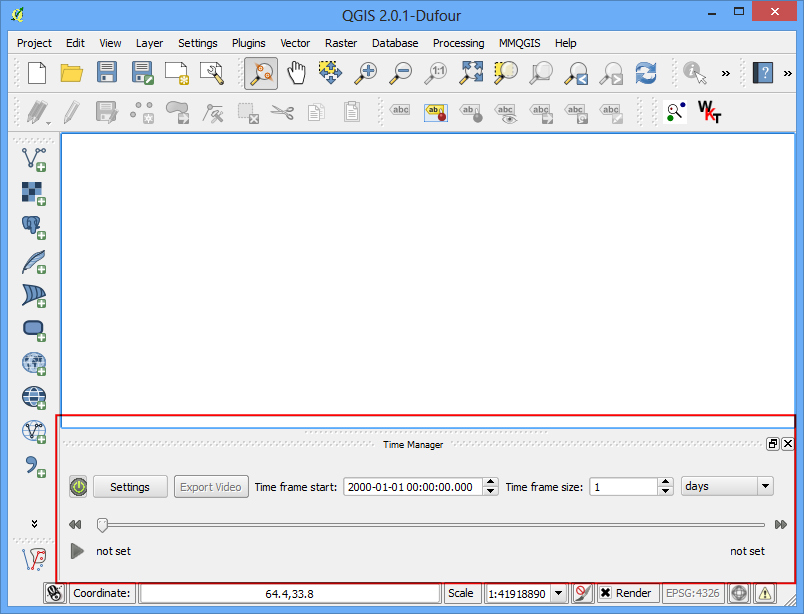

Externe Erweiterungen
Externe Erweiterungen sind über das QGIS Plugins Repository verfügbar und müssen installiert werden, bevor man sie verwenden kann. Ein einfacher Weg, diese zu durchsuchen und zu installieren, ist das Erweiterungen Werkzeug zu verwenden.
Öffnen Sie QGIS. Klicken Sie auf , um das Erweiterungen Fenster zu öffnen.

Klicken Sie, sofern nicht aktiv, auf Alle (neu in QGIS 2.8.1). Hier sehen Sie eine Liste der verfügbaren Plug-ins.

In diesem Beispiel, suchen und installieren wir das Plug-in ‘QuickWKT’. Während Sie im Feld Suchen qui eingeben, sehen Sie unten die Suchergebnisse. Klicke auf QuickWKT. Als nächstes klicken Sie Erweiterung installieren.

Sobald das Plug-in heruntergeladen und installiert ist, sehen Sie einen Bestätigungsdialog.

Wie Sie vielleicht festgestellt haben, war keine Plug-in Kategorie in der Beschreibung vermerkt. Das macht es schwer festzustellen, wie die neu installierte Erweiterung verwendbar ist. Die meisten externen Erweiterungen werden unter dem Erweiterungen Menü selbst installiert. Klicken Sie auf . Üblicher Weise erstellen externe Plug-ins auch eine Schaltfläche in der Erweiterungen Werkzeugleiste. Sie können also auch diese benutzen, um das Plug-in zu verwenden.

Experimentelle Erweiterungen
Sie wissen jetzt, wie man Externe Plug-ins in QGIS findet und installiert. Lassen Sie uns erweitere Optionen erkunden. Manchmal sucht man nach einer bestimmten Erweiterung, kann diese aber nicht unter Alle (neu in QGIS 2.8.1) finden. Das kommt eventuell daher, weil das Plug-in als experimentell markiert sind. So installieren Sie jetzt eine experimentelle Erweiterung.
Öffnen Sie Erweiterungen über . Klicken Sie auf Einstellungen. Hier sehen Sie eine Option, die Auch experimentelle Erweiterungen anzeigen heißt. Aktivieren Sie die Checkbox, um es zu aktivieren.

Sie sehen nun einen neuen Eintrag Neu. Expermimentelle Plug-ins werden hier angezeigt.
Bemerkung
Dieser Neu Eintrag wird nur dann angezeigt, sofern experimentelle Erweiterungen aktiviert ist. Wenn Sie das nächste Mal Erweiterungen öffnen, werden auch diese Plug-ins neben den regulären in Alle angezeigt.

Wir installieren eine Erweiterung, die Time Manager genannt wird. Kicken Sie auf den Plug-in Namen und dann auf Erweiterung installieren.

Wenn Sie zum Hauptfenster von QGIS zurückkehren, sehen Sie ein Bedienfeld im unteren Bereich. Es wurde durch das Time Manager Plug-in erzeugt. Dies ist eine andere Art, wie Erweiterungen Funktionen zur Bedienoberfläche hinzufügen können.

Sie können das Bedienelement über aktivieren/deaktivieren.